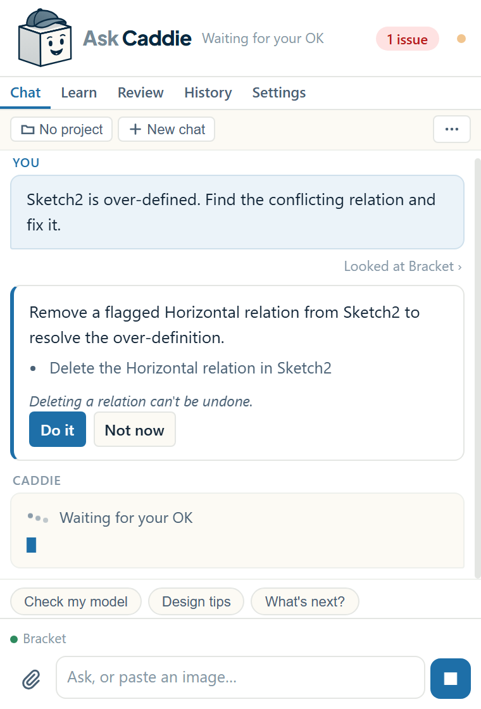

Fix rebuild errors and red sketches
Caddie sees every rebuild error, warning and sketch problem in the open model. Ask about the problem and it tells you what's wrong, why, and the quickest fix.
Ask about the problem
You don't need to name the feature or copy the error message. Caddie reads the errors before it answers.
What Caddie can see
- Rebuild errors and warnings on every feature, with the reason SolidWorks gives, such as a fillet radius that's too big or a missing reference.
- Each sketch's status (under, fully or over-defined), its relations, and which ones are over-defining it.
- Dangling relations and dimensions left behind when an edge or face they used has gone.
- Parent and child features, so it can trace a failure back to the edit that caused it.
- Mate errors in assemblies.
Three ways to fix it
- Let Caddie fix it. When the fix is clear, such as a conflicting relation or a radius that's too big, Caddie shows the exact change. Click Do it. Most changes can be undone.
- Fix it yourself with a guide. Say "walk me through it" and Caddie highlights each step on screen while you make the clicks. Good when you want to learn the fix.
- Just understand it. Ask "why did this happen?" and Caddie explains the cause, so it doesn't happen next time.


Live notices
Caddie keeps an eye on the model while you work. When a feature gets a new rebuild error, or a sketch becomes over-defined or under-defined, a short notice appears in the chat with a Fix it button. The badge at the top of the panel shows how many issues the model has; click it and Caddie fixes what it can.
Common problems
| What you see | Usual cause | What Caddie does |
|---|---|---|
| Fillet or chamfer fails | The size is too big for the edges or the wall | Compares it with the geometry, suggests a size that should fit, and can change it |
| Red or yellow sketch (over-defined) | Relations or dimensions fighting each other | Finds the conflicting relation and proposes deleting it |
| Blue sketch (under-defined) | Missing dimensions or relations | Explains what can still move and how to pin it down |
| Dangling relation or dimension | The edge or face it referenced was deleted or changed | Names the dangling item and guides you to re-attach it |
| A feature fails after an edit further up | A lost reference, or a size now out of range | Traces parents and children to the edit that caused it |
When Caddie can't make the fix
Some fixes aren't changes Caddie can make yet, such as adding a sketch relation, re-attaching a lost reference or editing a mate. Caddie says so and walks you through doing it by hand, with each step highlighted.